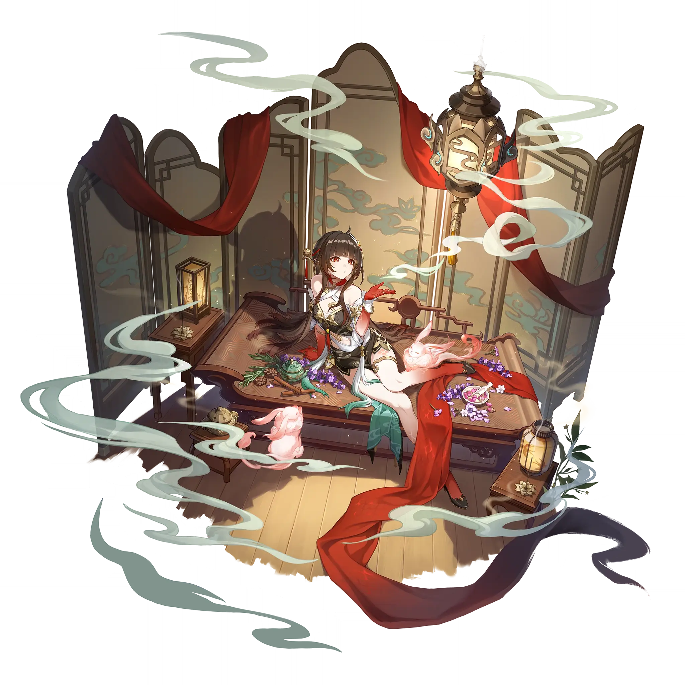

Lingsha
Best Lingsha build guide for Honkai Star Rail. See Lingsha's best Relics, Light Cones, teams, Eidolons, Trace priority, and how to play Lingsha.
🔍 Detail Skill
Semua skill aktif dan pasif beserta efeknya.
Deals Fire DMG equal to #1[i]% of Lingsha's ATK to a single target enemy.
Deals Fire DMG equal to #1[i]% of Lingsha's ATK to all enemies and at the same time, restores HP equal to #2[i]% of Lingsha's ATK plus #3[i] for all allies. Fuyuan's action advances by #4[i]%.
When using Skill, summons Fuyuan, with an initial SPD of #1[i] and an initial action count of #7[i]. When taking action, Fuyuan launches follow-up attack, dealing Fire DMG equal to #2[i]% of Lingsha's ATK to all enemies. Additionally deals Fire DMG equal to #8[i]% of Lingsha's ATK to a single random enemy, and this DMG prioritizes targets that have both Toughness greater than 0 and Fire Weakness.
After using Technique, immediately summons Fuyuan at the start of the next battle and inflicts "Befog" on all enemies, lasting for #1[i] turn(s).
⚔ Light Cone Terbaik
Diurutkan dari yang paling kuat. Persentase menunjukkan performa relatif terhadap pilihan terbaik.
💎 Relic Set Terbaik
Set terbaik untuk karakter ini, diurutkan berdasarkan prioritas.
📊 Stat Utama
Stat yang dicari pada tiap slot.
👥 Tim yang Direkomendasikan
Karakter yang sering dipasangkan bersama Lingsha.
 Tingyun • Fugue
Tingyun • Fugue
 Trailblazer • Harmony
Trailblazer • Harmony
 The Dahlia
The Dahlia
 Lingsha
Lingsha
🔗 Lanjutkan
Build ini dirangkum dari Prydwen Institute. Starwise tidak menghitung sendiri. Angka bisa berubah setelah patch atau karakter baru rilis.